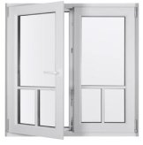
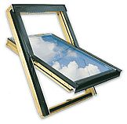

Építkezők figyelmébe!
Beltéri

Az általunk kínált beltéri ajtók többféle kivitelben választhatók. Méretre legyártva, egy- és kétszárnyú, különböző arányban üvegezett. Akár hangszigetelő vagy golyóálló üvegezéssel. Zárszerkezetek egész skáláját kínáljuk, az egyszerű tolóajtós rendszertől a többpontos biztonsági zárakig.
Fakeretes

Klasszikus és hőszigetelt üvegből, szekcionált és egyfelületű kivitelben, akár kiemelt hő- vagy hangszigeteléssel, sőt már golyóálló változatban is.
Hagyományos téglás

Jó építőanyag nélkül nincs építkezés. Kínálatunkban most akciós a belső elválasztó falakhoz ajánlott klasszikus égetett tégla.
Kültéri

A kültéri ajtó a lakás és iroda első bútora. Klasszikus és üvegbetétes, fa és műanyag borítású, egyszerű és acélmagos szerkezettel, szabványos és egyéni méretezéssel egyaránt tudjuk szállítani.
Műanyag keretes

A legjobb minőségű, két és háromrétegű hőszigetelt üvegezés. Két- három- vagy négyrészes - akár mind bukó-nyíló kivitelben. Méretre szabva, az Ön igényeihez igazodva.
Hőszigetelő tégla

A falakon kiáramló hő súlyos pénzveszteséget jelent minden épületben. Ne csak nyílászárói esetében gondoljon a hőszigetelésre, hanem már az építkezés megkezdésénél, a falazati tégláknál is!
Tetőtéri ablakok

A különleges igénybevételhez igazítva, többszörös vízzáró és vízelvezető megoldással. Napvédővel vagy anélkül, akár sötétített üveggel is.